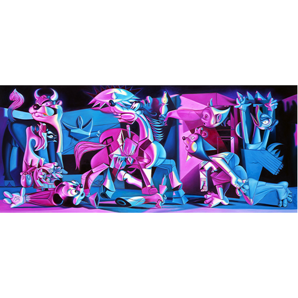

Literature
Ron English, Abject Expressionism: The Art of Ron English (San Francisco: Last Gasp, 2007), p. 178. ISBN 978-0867196894.
Ron English, Original Grin: The Art of Ron English (Paris: Cernunnos, 2019), p. 206. ISBN 978-2374950938.
Notes
This work references Pablo Picasso’s Guernica.